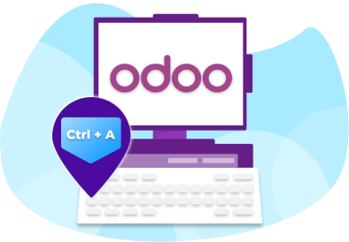
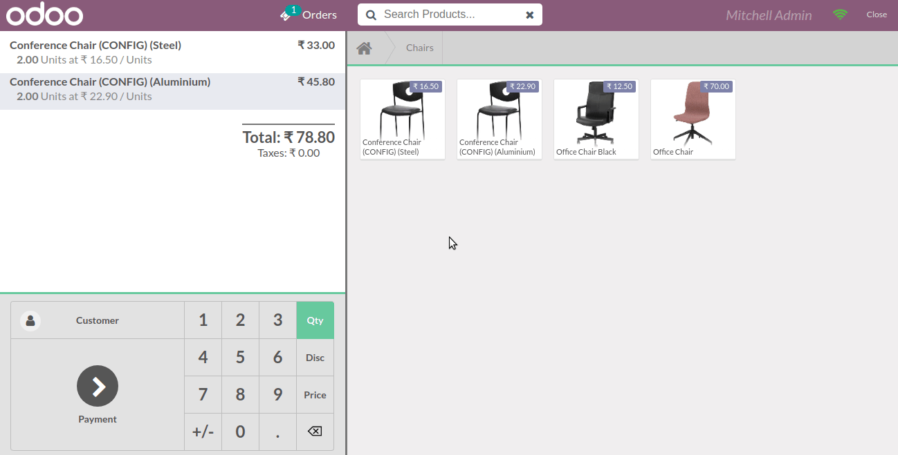
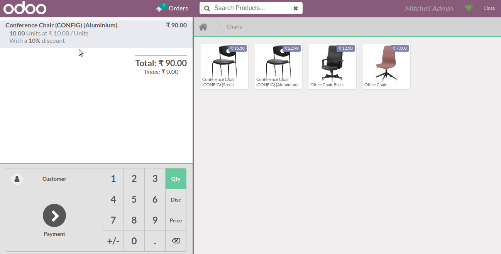
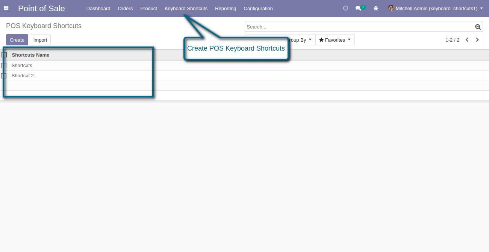
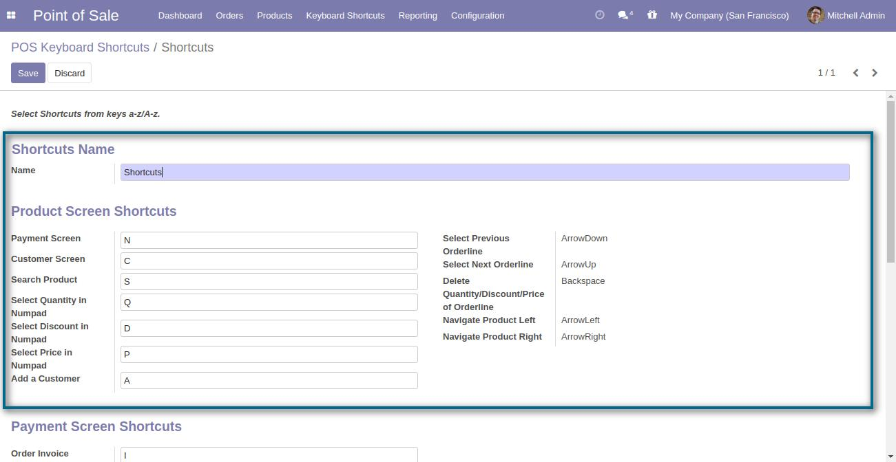
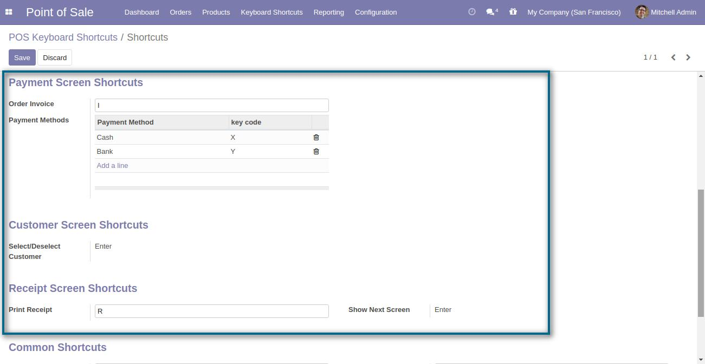
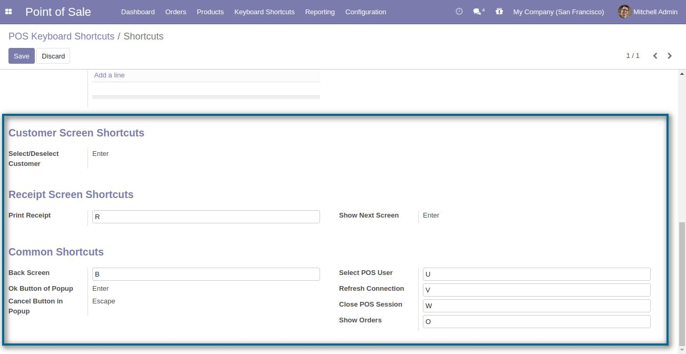
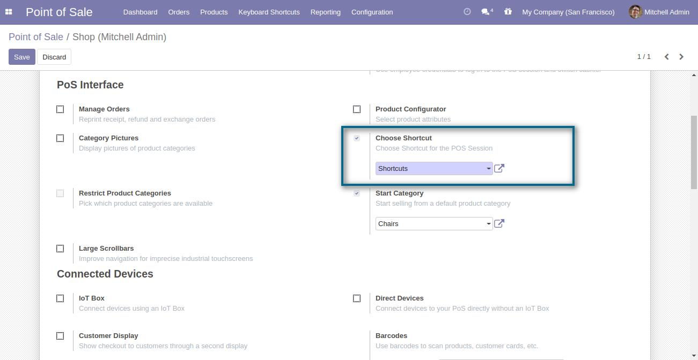

Odoo POS Keyboard Shortcuts
Use Hotkeys for quick navigation in Odoo POS!
Odoo POS Keyboard Shortcuts module allows you to add several shortcut keys to make the POS easier for your cashier. It helps your cashier to proceed quickly so that long queues in your shop can be handled efficiently.
Information
User Guide
https://webkul.com/blog/odoo-pos-keyboard-shortcuts/
Keyboard Shortcuts are the right way to increase productivity! Because muscle memory/ procedural memory incorporates the multiple muscles and organs simultaneously without the requirement of paying much attention. Thus, increasing efficiency for any work such as riding a bicycle or typing on a keyboard.
When a customer visits an offline store and the cashier is not able to deal with it quickly then in such cases, it increases the customer's chance to not to visit such a shop again. Customers tend to visit the shops more where they get quick service.
Do you want your Odoo POS Cashier to deal with more customers in less time?
Odoo POS Keyboard Shortcuts has come up with the shortcuts which you can create yourself. Now, the keyboard keys are enough to easily work in Odoo POS. Keyboard Shortcuts in Odoo POS can save your time to a great extent as working with the keys is comparatively faster than moving the cursor. All you need to do is remember the shortcuts. Moreover, you can create the shortcuts yourself as per your convenience.
Pre-defined Shortcut keys for the Odoo POS you get with the Module
- Create a New order : Insert
- Delete Current Order : Delete
- Select next Order : Arrow Right
- Select previous Order : Arrow Left
- Ok Button of Popup : Enter
- Cancel Button in Popup : Esc
- Select Previous Orderline : ArrowDown
- Select Next Orderline : ArrowUp

Create Multiple Shortcuts to extend the ease for the Odoo POS Cashier
Users can create multiple Keyboard Shortcuts to choose from for the POS Shop. It can be set as per the flexibility required by the POS Cashier.
The module also includes the shortcuts for multiple important functions of the POS such as Add a customer, Next order, Print Receipt, etc. Faster billing processes are one of the biggest relief for the customer.
The module allows you to make the Odoo POS session as much as easier for your cashiers for better productivity.
Detailed Features List
Below is the detailed list of Feature for Odoo POS Keyboard Shortcuts
- The module allows you to create keyboard shortcuts for Odoo POS Session.
- It adds important predefined keyboard shortcuts.
- The Odoo user can change the hotkeys as per his preferences.
- Each POS shop can then be assigned a distinct configuration as per the user's requirements.
- Multiple separate configurations of shortcuts can be defined by the user.
View Shortcuts

Making Changes in Orderline


Make Changes in Payment Screen

Create Shortcuts for POS




To use Keyboard Shortcuts we need to enable Choose Shortcut setting from POS Configuraion.
